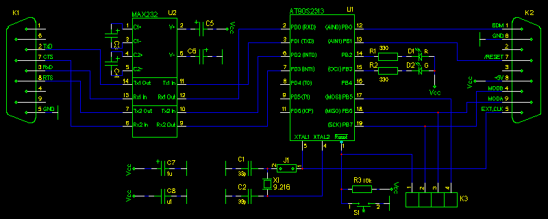
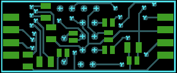

Zapojení
Pøipojit k jednoèipu jeden drát a z druhé strany RS232 je stejnì
objevné a tajuplné, jako zapojit ¾árovku k baterii v kapesní svítilnì.
|  |
| Schéma zapojení podexu |
Signály TxD, RxD, RTS, CTS (v schématu znaèeno z hlediska podexu)
sériového rozhraní RS232 jsou k jednoèipu AVR pøipojeny pøes budiè U2,
MAX232. V prototypu byla pou¾ita "hor¹í" a levnìj¹í varianta MAX232 bez
pøípony A, k ní¾ by mìly být pøipojeny kondenzátory 1uF (na plo¹ném
spoji formát 1206). Tyto mohou být tantalové, ale dají se sehnat i
keramické té¾e velikosti (ten pokrok, kde se to zastaví...). Konektor
K1 je mo¾no zapojit pøímo do sériového portu IBM PC. Svítivé diody D1,
D2 slou¾í jako ukazatele èinnosti a chybového stavu a rovnì¾ mohou být
libovolnì ovládány z programu øídicího poèítaèe. Na konektor K3 jsou
vyvedeny signály MOSI, MISO, SCK sériového programovacího rozhraní
AT90S2313 a signál /RESET, kterými (spolu s pøipojenou zemí GND
konektoru K1 nebo K2) je do FLASHe jednoèipu AVR nahráván firmware.
Plo¹ný spoj umo¾òuje pøipojit spínaè S1 na vynulování AVR (nemìlo by
být potøeba). Hodinový signál jednoèipu je èerpán z krystalu X1 o
frekvenci nejlépe 9.216MHz -- nejvy¹¹í výrobcem udaná frekvence pro 5V
AT90S2313 je 10MHz a 9.216MHz je nejbli¾¹í ni¾¹í frekvencí, z ní¾ lze
dobøe vydìlit takt pro 115200b/s sériový pøenos. Krystal je pøipojen
pøes propojku J1, kterou je mo¾no rozpojit a hodiny èerpat zvenèí pøes
konektor K2, napøíklad ze signálu EClock procesoru HC12. Na konektor
K2, urèený k pøipojení BDM, je kromì zmínìných hodin a napájení vyveden
tøístavový signál BDM (BKGD), signál /RESET a dále programovì ovládané
linky MODA, MODB umo¾òující práci s roz¹íøenou pamìtí (sbìrnicí) procesoru
HC12.
Stavba
Podex byl navr¾en na oboustranném plo¹ném spoji s oboustrannou
povrchovou montá¾í souèástek. Neju¾¹í mezera je
¹iroká pøibli¾nì 0.2mm, ale na bájeèném a levném pracovi¹ti v Liberci, kde
oficiálnì podporují mezery a spoje nad 0.25mm, vyrobili destièky moc hezky.
Destièka je urèena k umístìní do krytky na dva
protilehlé konektory Canon DB9. Je vsunuta mezi pájecí ¹pièky (slou¾ící
obvykle k pájení vodièù kabelu) tìchto konektorù a povrchovì pøipájena
k tìmto ¹pièkám plo¹kami na desce. Konektory tedy zároveò dr¾í destièku
v krytce. Konektor K1 je samièí, aby odpovídal zapojení RS232, K2
samèí, aby nedo¹lo k jejich zámìnì. Svítivé diody byly pou¾ity kruhové
o prùmìru 3mm, pokud budou
osazeny, není od vìci vyvrtat pro nì otvory v krytce. Jako programovací
konektor K3 jsem pou¾il 4 dutinky "precizní" lámací li¹ty -- pozor, aby
se souèástky do krytky ve¹ly. Propojku J1 mù¾ete natvrdo propojit,
nebudete-li pou¾ívat vnìj¹ích hodin (jinak ji nechte rozpojenu). Spínaè
S1 nejspí¹e nebudete nikdy potøebovat. Pokud se vám nehodí navr¾ený
plo¹ný spoj nebo jej nemáte kde objednat, postavte si zapojení na desce
univerzálního plo¹ného spoje -- obvod je velmi jednoduchý.
Plo¹ný spoj
 |
| plo¹ný spoj (horní vrstva) |
|
|  |
| plo¹ný spoj (spodní vrstva) |
|
 |
| osazení desky (shora) |
|
 |
| osazení desky (zdola) |
|
|
|
Seznam souèástek
|
oznaèení
|
typ
|
pouzdro
|
hodnota
|
| U1 |
AT90S2313 |
SO20W |
|
| U2 |
MAX232 |
SO16 |
|
| K1, K2 |
DB9 |
DB9SM |
|
| D1 |
LED |
LED_3mm |
R |
| D2 |
LED |
LED_3mm |
G |
| C1, C2 |
CAPACITOR |
0805 |
33p |
| C8 |
CAPACITOR |
0805 |
u1 |
| R1, R2 |
RESISTOR |
0805 |
330 |
| R3 |
RESISTOR |
0805 |
10k |
| S1 |
SWITCH_PUSHBUTTON_NO |
JUMPER2 |
|
| X1 |
CRYSTAL |
HC49 |
9.216MHz |
| J1 |
JUMPER |
JUMPER2 |
|
| C3, C4, C5, C6, C7 |
CAPACITOR |
1206 |
1u |
| K3 |
HEADER3 |
JUMPER4 |
|
Krabièka podexu se propojuje s øídicím poèítaèem buï pøímým
zasunutím do RS232 DB9 konektoru, nebo propojovacím kabelem, který
ov¹em musí obsahovat i RTS a CTS signály. Pro BDM rozhraní je
dokumentací k procesorùm HC12 stanoven standardní 6tipólový konektor,
pro pou¾ívání linek MODA, MODB je doporuèeno jeho 10tipólové roz¹íøení.
Konektor K2 je zapojen tak, aby jej bylo mo¾né propojit kabelem AWG se
samoøezným konektorem DB9 na stranì podexu a 6ti(10ti)pólovým
samoøezným konektorem PFL na druhém konci.
 |
| Zapojení konektorù BDM |

Programování firmware
Firmware je do FLASH pamìti AVR AT90S2313 nahráván pøes konektor K3.
K programování staèí propojit signály sériového programovacího rozhraní
s paralelním portem LPT/Centronics dle náledujícího, mezi u¾ivateli AVR
ustáleného, zapojení (Direct AVR Parallel Access):
 |
| Zapojení programátoru AVR pøes LPT |
Pozor, kromì signálù vyvedených na konektoru K3 je tøeba propojit s
programovacím poèítaèem i zem (GND), nejlépe konektorem K1. Zároveò je
samozøejmì nutné napájet programovaný podex 5V pøes konektor K2 (je
mo¾né napájet jej z desky s HC12, nejsou-li pøipojeny linky MODA,
MODB).
S takovýmto zapojením na paralelní port lze podex naprogramovat
napøíklad programem uisp.
Pøipravený firmware se nahraje
napøíklad pøíkazem
uisp -dlpt=0x378 -dprog=dapa --erase --upload --verify if=podex.hex -v=3 --hash=12
|
(0x378 je základ adresy LPT portu, podex.hex je jméno souboru s
firmwarem, více viz v dokumentaci k uisp). Naprogramováním firmware je podex
hotov a schopen práce s HC12.